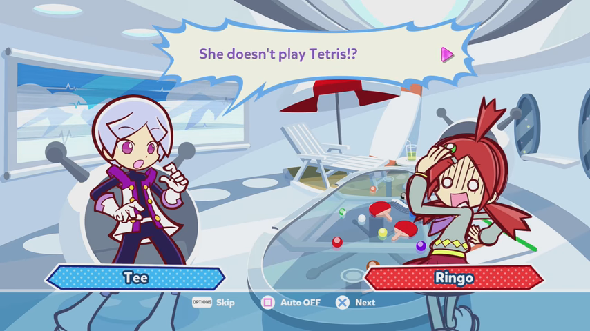

rikotsura for puyo puyo tetris 2 official part 2: ss tetra's coming to town (to t-spin you)
1:05 pm
hi it's me rust welcome to the second part of the puyo puyo mega blog post! last time we left off explaining a handful of the characters before we skip another forty spin-offs while also disregarding a few important characters and also screwing up the history of the game entirely. please read the first part of the post if you haven't already! anyways, let's recap. but before that let's also include the world famous

there, now we're good to go. right, recap! puyo puyo is a dr. mario like game that has most of it's games made in only japan while only a handful have (OFFICIAL) english releases with one of them being made from the same guy who made sonic adventure 2 or heroes (i forgot but it's one of the two). the publishers changed over time due to licensing which lead to the compile era and the sega era. the compile era was where we got most of the main characters, including arle who decapitated schezo because probably a crazy woman. the sega era gave us lemres, that's it. that's the only one (not really but i want to believe it is)
additionally, with the upcoming puyo day coming up later tomorrow with 25 or so announcements (with none of them being puyo puyo 30th anniversary sadly (UNLESS WE GET PROVEN WRONG FROM A TWITTER POST)). maybe they'll announce the tetris spinoff for real this time. HOWEVER that DOES remind me that we actually have another game to cover now... after a few more characters. sure, that's what caused the delays but THAT'S NOT STOPPING ME FROM COVERING A FEW MORE!
 |
doppelganger arle
arle: i found you, faker! doppelganger arle: faker? i think you're the fake arle around here. you're comparing yourself to me? HAH! you're not even good enough to be my fake. arle: I'LL MAKE YOU EAT THOSE WORDS |
|
|
dark prince/satan
the green bad guy who does all the funny bad things and also almost caused everyone to die of a heat stroke that one time during the game puyo puyo sun during the compile era! yeah that's why nobody likes the dark prince (otherwise known as literally satan in japan idk why but this is more of a compile moment ...............). this bitch decided to go level 9 cpu mode on me every time in puyo puyo tetris and in both modes the guy literally 0-2's me like it's absolutely nothing. additionally ol' darkish prancer over here wants to marry arle who shot him with a gun that one time during the compile-era and it's like they never bring it up. like c'mon that's going to leave SOME scars on you. schezo out here having to be the dirk strider of the puyo puyo character list and this BASTARD's just playing the ukelele because he powered the dumbass sun into a yellow giant and now it's 40 thousand million degrees and he's just CHILLING LIKE NO TOMORROW. the dank dunce caused global warming and he suxxors. now if you excuse me im going to cannonball myself into the sun in hopes of breaking it like mere glass. |
 |
dapper/oshare bones
so basically note that this also confirms that according to the skeletal system of puyo puyo characters, they should all have thighs so have fun with that or some shit. also the dude never shows up anymore besides the quest game but yeah that's how it works doe!!!!!!!!!!!!!!! (im joking, obviously) |
1:53 pm
well by the look of this it seems that my time's up for the hour and that i have french and then another hour to fix up some posters as i got the french stuff on them wrong. i probably won't update for the rest of the day but in case i do i'll get any additional characters out of the way and then shove your face with puyo puyo tetris. aight peace it's time for french.
4th
9:00 am
whoops, silly me once again. time for the additional characters! then it's vibeo grame time.
 |
suketoudara
he's just a fish that do funny dance doe |
 |
amitie
you ever look at something and go "wow, i want to hug this lovingly so bad because this is absolutely adorable"? this is the definition. amitie is the cheerful yet clueless/naive and can get r/wooshed and lose upvote very easily. however, her epicness and sonic adventure-like cutscene in puyo puyo fever (where they also mispronounce arle's name as "ar-le" instead of "ar-ul" and that someone made it to bloody fuckin' retail. but still, sonic adventure 2 cutscene guys. with the character portrait and funny words on screen. according to the super accurate and totally not at all wikipedia-like puyo nexus wiki (joking btw), amitie has a pure heart, and also wants to be a wonderful sorceress yet has little skill with the magic involved. additionally, amitie's energeticness makes her a bit lacking with social interactivity and can be clumsy. but that's what makes her cooler R I G H T ? right! amitie's a pure happy soul who deserves a hug. yes |
the rest we'll cover later. however, for now, let's get into the concept of the next bloody game! after puyo puyo 7 and a few spinoffs after that and fever, we now FINALLY introduce you to the game that took one and one together... PUYO PUYO TETRIS! the vibeo grame to defeat all vibeo grames except probably not !!! puyo puyo tetris is what introduces us to several new characters, the ss tetra, yet none of them actually get new appearances until puyo puyo quest, in which still they don't get nearly as much affection as the main characters, some having triple as many as variations as the tetris related ones! makes you wonder why they haven't done more with the concept. sure, there's licensing issues with the tetris company and sega, but i'm sure the two can come together and make something marvelous.
9:45 am
damn, right at the good part too. the next cdli class is science and i have a test today, not to mention there's no other cdli class after that. wish me luck, see you soon!
5th
11:30 am
welcome back! i took the time to finish drawing ringo yesterday in celebration of puyo day!
besides that i almost forgot to update the post today! anyways today we're finally going to go in detail about puyo puyo tetris. puyo puyo tetris, as i said, is the ONLY puyo puyo game that i actually own. additionally, i first gave the game a shot on nintendo switch. essentially, puyo puyo tetris is when licensing actually gets you somewhere with sega and the tetris company. i mean, there probably is a tetris game on ONE of the sega consoles they made a decade or two ago, like the saturn. maybe the game gear? probably not the game gear. but, my point still stands. puyo puyo tetris at first sounds like an unlikely crossover to begin with, but thanks to the designers over at puyo puyo they were able to turn the tetris blocks into likable and unique characters. puyo puyo never had this issue because they already had characters at the start, yet tetris was always just a bunch of falling blocks. that changed (for that game only as of rn) however, and GOD do i like the designs. more on that later
i would argue there's more puyo than tetris, but it also introduces a new mode unique to puyo puyo tetris, which i find to be pretty fun (even with cpu players) yet it only comes in a battle mode and there's no marathon based mode for it. much like you would expect, it combines BOTH PUYO and TETRIS in a blender and expects you to handle both. it's a wonderful concept and i wished it was given more time to mature in more games. would've been great! however, i'm getting ahead of myself here. it's time to dabble into the first notable part of puyo puyo tetris before we really get into the fun, exciting parts.
12:00 pm
sike, the time don't allow for any of that! see you during probably not science (the other cdli class we have today) because it's science. it really likes to grab your attention to every little nitty gritty detail. i shouldn't complain though, i sorta already have. but once i get back, we'll get into the STORY MODE (wowzers). until then!
6th
11:05 am
welcome back to rust_ talks about a game for an entire bloody week, today we're going to continue talking about the story mode of puyo puyo tetris, the only puyo game i've bought in my entire life, and also the latest official tetris company product i've bought in a while. the best of both worlds collide in what seems to focus more on puyo puyo than anything until we get into fusion more (more on that later.) you all know how tetris goes down if you're a real person. blocks fall from the sky and you got to clear horizontal lines in order to clear them and progress. however, what if i told you that this game actually came out in 2014 ON 3DS, WII U, PSV AND PS3. and only in JAPAN. i know right? absolutely mindblowing. it even scrambled it's way into the xbox one somehow after the PS4, with then a switch release in 2017. how come we get all the less stuff and japan just bloody SWIMS in epicness? whatever, i shouldn't complain. if it weren't for that, i would have never gotten into puyo puyo to begin with. you know what time it is now? IT'S STORY TIME ON HOW THE GAME GOES DOWN
the reason why i'm telling you an abridged version of the story is because this is essentially one huge ass review and i have experienced the entire story...besides the last two extra acts (the first one i have played. more on that...eventually)
act not one quite yet: the opening
ringo's just standing there commenting on the rather peacefulness (a rare sighting) at suzuran junior high and then commits butch hartman (sorta) where when ringo thinks her friends may burst out of the sky, in which SURPRISE SURPRISE, they fall outta the sky!!!!! cut to hank j wimbleton i mean arle and amitie. they then have some good commentary on how the hell puyos have INTERDIMENSIONAL TRAVELLING ABILITIES (hot damn). the three, despite these circumstances and new discoveries of dimensional travel, decide that they'll stay together even at the edge of the universe (which is a broad and possibly impossible approach, that stuff hasn't been fully researched yet). however, the opposite occurs (AKA A BUTCH HARTMAN) and tetriminos begin to fall out of the sky. those are the names for those blocks! yeah what else was it gonna be smartass, blocks? pills? square puyos? WRONG!!!!!!!!!!! tetriminos for you. (some other spellings include tetriminoes but really, it's tetriminos seems like). if you remember from puyos causing travel, the three witness a single line being cleared and also commenting how sastifying it was. ringo, being the logical based person, realizes this equals interdimensional travel! the three now get warped into three random places inside a spaceship (named the SS TETRA, a very epic ship name. would want to be there), where we get introduced to Tee and O, the captain and the one that submits captain reports respectively. ringo, in the playroom, obviously has a panic attack, and tee has to find out "who tf are these people i did not expect VISITORS today !!!!!!!!!!"
|
|
tee
the captain of the ss tetra, tee sends captain logs to o about status reports and any sort of weird space shit that goes down. because of that, barely anything happens on the ss tetra. explains why he got that EPIC PLAY ROOM. his weapon of choice is a circle thing. i guess that explains the t-spin part of his character. additionally, he wears tight clothes (ringo comments on this when her and tee show up) and you can probably also hug him. seems to be that way  what? he's cute |
 |
o
square and flying carbuncle. will probably kill you |
act one: flagrant system error oopsie
continuing from the opening, ringo is currently in the play room of the ss tetra appearing to have a mental breakdown that her friends may be somewhere totally different, not knowing the three are all in the same room. personally maybe you should invest in interdimensional phone travel, i would worry about the costs of that, though. not sure how much you'll be paying for that service. either way, ringo freaks out to the point where tee and o actually hear her. tee shows up, and sees ringo. ringo fears tee at first and they decide to... do a PUYO PUYO battle in order to resolve the situation. however, tee has no idea what the hell a puyo is, to ringo's immediate concern.
12:00 pm
whoops, we can't do that for now, it's lunch time. more on act one later! next up for me is french and social studies, so i'm sure i'll be able to cram another hour into the abridged story later. bye for now, stan tee and ringo from puyo puyo (tetris)
2:02 pm
welcome back to the rust_ show, last time we left off with ringo amitie and arle stuck on the ss tetra after witnessing one of the 150 lines of tetris blocks being cleared when they started falling out of the sky. tee and o, the main two of the ship, notice the cries of ringo after losing her friends during the epic interdimensional travel. back to where we left off
act one part two: oops still looks like the ss tetra has new people
tee looks at ringo and instantly thinks that her scared blabber nonsense is an improvised alien comedy routine. how the hell does that work, you two are speaking the same bloody language, of ALL THINGS, you instantly think an alien's on board. anyways, as i said, ringo notices tee existing in the middle of the room and the first thing she comments on is that he's wearing tight clothes. she thinks that tee caused the blocks to fall right out of the sky (based on logic) and demands that the two battle TO THE DEATH !!!!!!!!!!! oops i meant PUYO PUYO BATTLE!!!!!!!!!! however tee thinks that ringo is talking about tetris, and the two realize they use different battle game type things. they comment on this seemingly perfectly

|
 |
however the magic of plot and the game itself forces them to play their own modes in the same battling environment, which in fact doesn't end in a violent explosion killing the both of them with ease alongside the rest of the ss tetra. it actually just goes just fine! after ringo calms down from having several panic attacks about her friends and realizing that the person she was fighting with doesn't exactly use funny haha dr mario jelly beans, tee introduces himself as the captain of the ss tetra, alongside what the whole tetris ordeal is. ringo does the same but with introducing tee (and for most other people over in the western zone act 2 (canada and such), them as well) to puyo puyo. also adding the fact that they can travel to different worlds. for topics that broad she sure does like to talk about it rather casually.
additionally, i also want you to take the time to look at tee being happy. this is actually a rather important detail. lets move forth now. tee and ringo now go around the ship to meet the rest of da COOL GANG OF SS TETRA. we now introduce you to amitie again (yay !!!!!!!) and ess, another ss tetra crew member
 |
ess
ess, far as i know, has a strong spot on her sense of fashion, being cute and innocent at the first glance (at which yes, she is cute). however, she can be bratty and rude towards others, and most certainly when they annoy her, ESPECIALLY when she's busy with something. despite this, she acts warm and respectful when zed is around (more on IT/HIM later), who ess thinks is her father when it's actually someone else being her true father, but we'll get to that later too. but for ess, she's a cute and bratty girl with a good taste and fashion and only acts well behaved when zed is around. |
2:55 pm
oops time to pause the introduction of ess and amitie again, it's almost time to go home for the rest of the day. see you when i get back!
7th
right... let's just get right into it.
act one part three: ess and amitie exist once more, who would've seen that one coming? (not me of course (just kidding i know))
so yeah ess and amitie are on the ss tetra (ess being one of the crew members of coolness). ess asks amitie one simple question by instead asking several questions like my math book questions where they for some reason put several questions in the same question. im surprised she hasn't said "what the FUCK is sonic". but yeah, she asks amitie a lot of questions at once, leading amitie to go into CONFUSED AMITIE MODE (not to mention ess calls amitie weird. damn what an asshole ????) by mentioning her brain hurts. not cool ess........not cool. ess, much like tee previously, has no idea what the flicking frick a puyo is which only causes more questions. ess also doesn't think magic is real. ess is pissed off to the point where she could smack amitie with a tetrimino. what are those made of anyways, metal? plastic? soft fur you would use with blankets? i'd prefer the last one. amitie meeps out of the situation by saying "meep!" tee, ringo, and o find the two. ringo states that amitie can be a handful. oh NOW look who the dingus is....... although, she calls ess abusive in which that works out. the girl was about to smack amitie with a block, i think that says something on it's own. ess then looks at tee and they proceed to argue about ess being supposed to nap in peace, a """supposed""" captain's sworn call of duty. tee then describes rather angrily that he can't be everywhere, ess replying that he's useless. amitie notices tee because of his strangle clothes (says the one who used to have a hat with wings). amitie is furious that tee's there and.. the two decide to battle with puyo to calm amitie down? long as it works. anyways, after that, amitie questions what the blocks were and then decides to take that off her shoulder and happily wants to do the battle again because it was fun, proceeded by a giggle. i think you now know why amitie is baby, shes normally happy despite the situation.
after that whole argument, the gang of.. uh, four peoples go and find arle. amitie mentions that if you hear a "gugu", that means you're probably close. that's the carbuncle of the arle for you, totally not decapitation in mind. okay that joke's getting a bit stale at this point, my apologies. ess aka dunkass recalls that she heard a gugu earlier, so the three (((((and ess))))) head out to where the gugu was heard. except not, because we're actually on a detour to TWO OR THREE NEW CHARACTERS. UH OH!!!!!! ACT ONE INTERMISSION (no wait this is still act one)
 |
jay and elle
the trouble makers of the starship, sorta like uhhhhhh beavis and butthead. despite this, they're essentially twins to the point where they complete each other's sentences. while they may seem like a powerful duo, they blame each other when they commit oops. they also like to pull pranks on ai (more on him later). in the japanese alternate dialogue, instead of blaming each other, they instead apologize to each other. proves that they're inseparable. absolutely outstanding relationship !!!! oh, and the two represent the l and j blocks in tetris. just saying. |
10:46 am
oops (again), can't talk about the more on that later just yet, recess is coming up. next cdli course isn't until the last subject at 2pm (lift skills and math are up next). this is essentially gonna be the longest post yet, huh? i guess that's better than several miniature posts! maybe i should also make a misc section dedicated to full versions of pre-existing blog posts. ooh, that'd be nice. anyways, see you soon!
2:02 pm
back to business!
|
|
ai
the talking dog from johnny test but as a scientist. enough said. besides that, he's the guy that's supposed to fix the ship when it commits oops moment. i actually have nothing else to say on him, he's pretty forgettable. dog |
act one part four: pants. hurhurhruuhhhuhuhuuhrhurhuruhru
so yeah jay and elle are messin around with ai as part of their daily todo list, the equivalent of "go to work go to work go to work go to work go to work go to work go to work go to work go to work go to work go to work". the two say they didn't do stuff such as pelt life frogs at the dog. like DAMN how the hell do you get frogs in SPACE? SPACE OF ALL THINGS AND YOU FIND DA FROG. you're just listing all the stuff you just did, dinguses. you're not very good at this pranking thing if you publicly say the thing you are going to do before you do it. least their voices are smooth. amitie refers to the dog as a puppy, ringo asking about it, and then asking tee about it. however, i appear to have mistaken their slow voices for sarcasm and that they haven't actually done any pranks to the dog at all, including pelting live frogs and tail tug-of-war. ai actually saw arle the gugu man (aka carbuncle). tee and ai have to fight each other with tetris to calm down ai. the dog then returns to his senses. the gang then goes to arle. and then o says one line.
we now cut to hank j wimbleton i mean arle (HJWIMA) and zed, dat robo dood.
 |
zed
beep boop bop boo boo beep bop beep *crazy frog theme plays*. also the fake father of ess, who always treats zed like the fatherly figure, mainly due to the body shape. weird, huh? you always think it would be some other reason but nah ess is probably like half blind or the big dumb. mr krabs because zed is based on the red s piece. |
(200 LINE MARK!) zed is being content-suggestive towards arle in a way that you could take their dialogue out of context and tell someone it's the funny sex scene. uh oh. not cool bro !!!!! however, zed instead just wants arle and carbuncle to not actually commit sexual intercourse but rather eat food and brush teeth. regarding how arle never changes her clothes i think that explains why zed is driving off the wall. amitie and ringo question it, but amitie just says run and giggles. zed has this whole list of demands which are mostly hygienic, and arle just commits the "NOOOOOOOOOOOOooooooooooooo" from battle for dream island and does not commit eat healthy food. WORST OF ALL, zed lectured arle on... PROPER HAND SANITIZATION TECHNIQUES!!!!!!!!! that BASTURD !!!!! who does he think he is ???!??!!????!??!???!??!? this also means that arle has a poor sense of manners. i mean yeah she never changes her clothes. even carbuncle complains about it. but hey, least we have the entire ss tetra crew covered. arle meets tee, the captain, and expects tee to have the same list of demands, yet this is obviously false. the two battle, ringo admitting this is how every situation gets resolved. you ever think that's also how they decide who rolls first in a board game? whatever, the entire gang's together!!
OOPS do you hear that ALARM? NO OF COURSE YOU DON'T THAT'S WHATS HAPPENIN IN DA STORY DUNKASS! it appears the ss tetra.....committed an oops moment! the tetra emergency alarm's going off, and everyone goes to the cockpit before the predicament gets any worse. it appears the puyos have invaded the funny ship! everyone is obviously complaining about this and are trying to pop the things. however, what are they even doing? maybe they're tryna order more space frog branded pizza out from the mcdonalds galaxy. so basically these dumbass blobs caused the cockpit to stop working and they put their blobby hands all over the controls. but wait, what's this? the ships being pulled by a PLANET GRAVITATIONAL FIELD. UH OH! we're about to crash booooooooys. get your plot armor on. ringo and ess scream slightly higher than average, and everyone's gotta go as soon as as soon as possible as possible. tee also asks ringo to help pop puyos, and ringo asks tee on how to clear tetriminos. ringo also possibly jinxes the entire gang into dying by saying that they'll hopefully not die when they land. the jinx means they might die when they land. fuck this about to be like the time sanford and deimos got crushed by a giant building dance party thing during the beginning events of madness combat 5.5 up in heres. some popping later, whole thing's cleared! except then it's not by sudden background change and now they're crashing for real this time. cue the explosion
2:55 pm
will they survive? find out later or whatever
10th
9:52 am
welcome to me again today the thign fucking crashed and now you are going to find out WHO IS THE SURVIVING...................................... the big reveal holy crap this is a tense moment
act two: they survived and so did i
they survived but the ship and crew are very broken and missing. this is what we like to call a bruh moment up in the house, but GUESSZ WHAT WE JUST FINISHED THE FIRST ACT. aw yeah, i am now COOL MCGEE. we now continue back to that funny game story doe! ringo realizes that they landed in the exact same spot as they were in previously but now the ss tetra's on top of the bloody school. outstanding performance guys you really know how to drive when you are unable to drive. arle and carbuncle are also confirmed to not be dead, thankfully. oh and amitie too. tee and the rest however are initially nowhere to be seen, meaning they've died horrifically or they're somewhere else around the hometown. anyways let me get side tracked for a moment for an intermission, there's something i should show you
you see those uh... tall buildings in the distance? i wonder what those are actually there for. i know it's not important to the story but there's always so many things and places that are never exactly explained into satisfactory detail. i would just wish they'd take the time to explore the smaller places.
alright back on track. everyone besides ringo go off to find the missing ss tetra crew members, and then maguro shows up! oh, i never actually explained who that guy is. um..... well i didn't know about him initially but for one thing that i do know is that some fanons like putting ringo and maguro together as a couple. not that i have any say on that though. ive seen some with ringo and tee together. well, uh... i don't really wanna do another character introduction thing hhhhhhhhhh. whatever fine i'll do it
|
|
maguro ✮
maguro is ringo's childhood friend that attends the same school as her according to puyo puyo 7, he got that game thing with the ball and wooden handle but it's puyo puyo themed. ✮ a kendama if i'm correct. ✮ additonally, according to the wiki, this man is a GAMER !!!!!!!!!!!!!!!! additionally, he puts ✮ at the end of his sentences idk why he does that but he does. ✮ besides this, maguro is often seen as strange and sarcastic with a smooth voice and being level-headed during most situations. ✮ however, he can go into panic mode easily if things do not go as the intentions want them to be! ✮ it's also confirmed that this man has an interest in tabletop board games. ✮ sweet i hope he knows how to play uno and trogdor the board game. ✮ oh that would be fantastic! oh, and one more thing from the wiki for your interest. ✮ " Puyo Puyo!! 20th Anniversary reveals that his eyes are apparently so beautiful they can make anyone regardless of gender or species fall in love with him, dubbed by Ringo as the "Beauty Beam". " do people find him the "hot" or something ? that would be interesting for a character arc but not like that ever happens when the story is just a watered down visual novel!!!!!!!!! oh snap ✮ |
THERE, back on track with that other stuff doe. maguro asks where ringo been as she seemed to have missed class when she was TELEPORTED TO A BLOODY (star)SHIP. and she just shrugs it off as NO BIGGIE. yeah you think? the starship's on top of your own school. maguro, surprisingly, is very wowed about this despite the fact that she missed class. has things gone to a point with these people that a starship accidental abduction, a normally impossible event, can be shrugged off as no biggie?? what if the world started breaking in half do you think you'll be shrugging it off?? maguro said he's jealous about it. moving on, obviously maguro notices the thingy on the roof. he also mentions tee being there because of, you guessed it, the tight jumpsuit! what bothers me is that they all comment on how tight it is. yeah what're you gonna do with that jumpsuit huh? what's with you and jumpsuits? and how would maguro assume to ask ringo about this? what's with HER and jumpsuits? the two head off to find tee and o.
tee and o are at the school entrance with the ship crashlanding (with a parachute, which i would assume explain why they haven't been seen in a bloody (literally) mess). tee, for some reason, doesn't know about this world, despite the fact it's literally earth. is tee an alien? are tetris players aliens? am I AN ALIEN? nah i shouldn't overthink it. maybe tee just hasn't seen earth in a while.. captain's report is as follows: "the starship tetra (ss tetra) has crash landed on an 'unknown' planet. crew are very missing and ship is very broken. possibly even flagrant." GET IT CAUSE THE STRONG BAD EMAIL? hah no you probably DO NOT UNDERSTAND THE JOKE. o is disappointed about this. ringo however shows up and tee instantly brightens up, which i guess may be one explanation to as of why people put the two together. besides being the supposed protagonists of their respective games. except tee doesn't have any besides puyo puyo tetris. tee offers ringo to help him find the missing crew members, and they "absotively" head on out, to both fix that dang ship and the missing crew members. without a tetris battle first, though. y'know to clear off steam and all, no biggie. ringo is flattered that tee remembered on helping ringo learn about it (further explains their pairings), and this is where shit gets REAL. tetris lines, back-to-backs, t-spins, and for me being topped out in under ten fucking seconds because i dealt with someone leagues ahead of me that i will probably never reach the skills of. on a clone of tetris by someone who is ALSO not good at tetris. my years of playing have meant NOTHING! nothing at ALL! it's all wasted aaaaaaaaaaaaaaaaaaaaaaaaaaaaaaaa- okay i should stop. we got a plot to continue
one adorable ringo giggle later, the battle thingy happens! after the battle, ringo reveals to tee that the crew have crashlanded in her hometown, uh... primp town! yeah see i remembered im a smart person. tee argues what the odds are... which are probably one in bloody infinity. that ship could've been ANYWHERE IN SPACE, an INFINITE REALM. for all i know they could've ended up in dream island, or hell even NEVADA. ringo, while also helping tee find the crew members, also takes the time to show him around the town at the same time, which i would say is quite flattering! man the fandom's right who knew ringo and tee are good friends in the first FORTY MINUTES. ringo's just that good at making friends i guess! o says nothing important and the three head out to find the funny crew members. where could they be? who is there to find? your boy got a checklist on hand no worries
cut to a bear grumbling. well much like ai however he's pretty much the same character but a bear. he does not get a character introduction because he's arguably the same character fundamentally besides the fact that he is a bear with.. yellow hair at the top of his head. whatever just think of boog from open season but with a phd in being very smart and cool. tee is already confused. tee asks who this man is, but ringo explains to tee and o that the person they're seeing now is risukuma. a student from the physics club. oh cool they have clubs? i wonder what clubs there are. ringo tells tee that there's not many other animal-type people in primp town, in-fact that risukuma is the only one. well SIKE there's like a fish man, two ghosts, and even a SKELETON. what do you mean ONE-OF-A-KIND? risukuma says that he has seen a trembling chihuahua that's walking upright. now what the HELL is HE going on about now? man he be seeing some shit like arle. oh, and the most out-of-shape robot in the ever. i guess we found ZED! the fat robot fake father! and the upright walking animal is ai, the dog thing! risukuma admits that he wants to observe how things go out. the gang then go meet zed and ai.
10:43 am
sorry, it appears our time as run short once again. what will zed and ai do about probably vegetables? find out when i slam my head on the keyboard. TO BE CONTINUED ONCE AGAIN!
11th
9:55 am
my apologies for not being able to update previously, i'm suffering with large amounts of depression that i don't normally get. if i had to be blunt, it's parental issues, they've been awfully rude and demotivating as of late and i can't seem to create a valid argument for myself because they always somehow argue back. they've been considering breaching my privacy even more... the bedroom door still doesn't work (anyone can open it even when it's locked or closed) and now they're trying to install spyware on my laptop. bitch do you think you know how to do that? i'll never give in to your insane parenting methods made for as little privacy as possible. if they saw me trying to make a living with digital art and making, eugh, FRIENDS over here, they would've slammed my head against the wall until i fucking DIED. not like i don't want to at this point, yet i fear the concept of it. an endless loop of fear and unwillingness to live.
with that out of the way, i'd NORMALLY try to continue the puyo puyo thing but the internet here is absolutely atrocious and i don't have the game on me myself, considering i do have the game so technically i could just go and watch the cutscenes myself with the game instead of a youtube video. i can't load 2 hour youtube videos with the current state of our provider's internet issues. it's only to the point where it's slow, so it's not too big of a deal, besides the fact i can't do what's planned for today. literally nothing loads at this point for poor google.
10:03 am
hold the phone bros! it suddenly popped in the video. we're good to continue without me continuing my venting for another hour until recess which then means the next subject and then an hour of suffering leading to the next two subjects and then my dad doing all he can to be 100% pissed off at me for doing literally nothing today besides doing my actual fucking work this time around. i even finally submitted that science fair part 1 after all this time despite thinking that was long gone now. ...alright, back to business. i feel like shit.
act two part two: you see that clock on the wall
we now (finally) continue with mr. krabs and the walking chipmunk or something (zed and ai). zed appears to be comforting ai that tee and the epic gamer gang will return soon to find them. their strategy of not going anywhere far away from the ship is a good idea. ai just does dog things and whine. like a dog does. like you do. like i suffer from. ringo founds the two. ringo sees the two with ai being on zed's lap (like you do...?) and ringo asks if she can take a picture. like you do?? risukuma does not want to take the picture because of our team's priorities and that they're not confirmed to have taken their shots. preferably not metal/lead, that's what a gun does dingus, not a flu shot. or a rabies shot. look i don't know? tee asks zed the report, he says that ai is very scared about this "alien world" that's also a home planet. zed wasn't able to calm him down and even maguro wasn't able to be of assistance either. what're the odds? not even da beauty beam can fix this. tee asks ringo to do it and she (obviously) agrees to that, leading to the funny puyo/tetris battle. how come "calming someone's down" requires literal fighting, something that isn't exactly calm? especially if you're in the higher leagues. i think me getting KO'd in 9 seconds is not what i call "calming", more or less the opposite of that.
after that fight, ai, expectantly, calms down. ringo still doesn't know that ai is a dog. is he a dog? we don't know. maguro asks if all the members look like this and tee says the exact same thing ringo did when she was talking about the science bear person. isn't that interesting? no? fair. but hey, that further explains tee and ringo's POSSIBLE relationship status. oooooo snap. we gettin' real up in here. tee and o ask ai and zed that the ship is currently in a bruh moment status and jay and elle (the twins) appear to be unaccounted for, including ess. zed says they've saw them earlier using his EPIC SUPER MONKEY ROBO VISION. tee positively asks "you don't say" and zed then says that they were going around to cause as much mischief as possible. oh no, they better not throw frogs at everyone again, it's gonna end up like that one scene in cloudy with a chance of meatballs where FLINT LOCKWOORDH literally barges into people's houses and has an ice cream snowball fight with the town. he also walks weird but that's besides the point we got something else to take care of and not that. zed mentions the two skipped off hand in hand to do the mischief, that's how you KNOW they are EPIC GAMER TWINS. literal COOL FOLKS. everyone now needs to go find them, ai and zed go and fix the ship instead, leaving our team to be roughly the same size. time for da status report
aized
back to the PLOT. jay and elle are at the town's shopping district, with all the funny stores that you'll actually never be able to see into more detail making the whole place even more curious and endearing, like what're the stores likes? are there even any other residents besides the people we've currently seen? oh no wait that last part totally just got debunked because jay mentioned that there's so many people. elle is equally as surprised and the both are happy that the game uses flowers to describe their emotions. very cool. they don't know what a shopping district is but they got a plan. either way their plan is to see which one of the twins can cause more mischief around the district before tee shows up. then, the second butch hartman is pulled and tee shows up right when they were about to start doing that funny prank doe. this be real bruh moment hours. ringo grabs the two so that they cannot do. PRANK MOMENT. jay and elle and ringo do the fight, ringo obviously wins. jay and elle are somehow not angry about this and just make fun out of the situation. ringo questions them even being real, wanting to do pranks by running off. jay and elle make an argument for themselves using the power of completing each other's sentences. they say someone brought the two here, wanting to cause mayhem throughout the town. this is a real "not sound too good" moment. it appears that jay further states that a girl with curly pink hair brought them here. now, we haven't properly introduced anyone with that type of hairstyle, so you know what that means... we 'bout to find out who this gamer is. same for elle with the mention of a girl with wavy blue hair.
one ringo thinking sound later, the twins point into the direction where ess is located, so the gang goes and find her instead of the other two girls wanting to cause mayhem that i still haven't introduced. jay and elle consider going back on their own with elle making sure jay is safe, but ringo, realizing of the two's pranking abilities, fears that their idea suxxors. maguro decides to take jay and elle back himself with "minimal to zero detours", which upsets the twins. minimal detours is somehow unfair and that they didn't agree to it. ringo doesn't fucking care and sends the twins off before she hits them with blobs again. the gang then go off to find ess. note i have no idea if we're on act three at this point. whatever, they're off! we now cut to
ess crying. yeah this is the first line of dialogue after the ss tetra epic gamer gang heads out. *whiney-sob* and all. understandable but this also explains ess' personality of not wanting to be alone sometimes. poor girl, you can even see the tears in her eyes. but she ruins it by just whining about tee being the captain (or supposed to be, i should say). damn what an asshole, how'd she even get this job on the starship to begin with? the two just bloody argue all the time for whatever reason.
10:45 am
not just yet though, the gang's gonna have to wait once again because of my time schedule. peace, if only we had ZERO TO MINIMAL DETOURS.
1:04 pm
one detour gone one to go! then my parents which in of themselves are yet another detour, more like a roadblock if anything. alright le
act two part three: say ess but replace the e with a
ess is very sad that tee didn't come and save her first and asks her father for help. real question is, who's the father? ess says she's lost and alone in a scary world. what's so scary about a boat in the middle of the ocean with a bridge and... WAIT HOLD ON ARE THOSE ROUNDED BUILDINGS. YES HMM EXCUSE ME WHAT THE FUCK. okay who designed this place i am calling the OCD police because this is driving me on the wall using an acorn fucking STAIRLIFT. ringo notices her current soft spot. tee also notices this.
alright look i know i would do my best to update this afternoon but im working on a social studies assignment, i won't be able to get into this this afternoon and i'm not sure about the rest of the day either.
12th
8:55 am
it's science but lets see how well i can continue with the abridged story....... which also appears to be horrendously long and may cause this to be the longest post alone (even without counting part 1 of the post). is this rust_ the movie 2? probably! on with act two!
act two part four: tee also notices this
tee and ringo see ess' soft side and tee mentions not to make direct eye contact. damn, you really treating her like an enderman here. ringo understands and lets tee take care of the rest, and tee and ess (who currently may have depression and anger at the same time) then do the thing where they battle with the blocks and stuff. ess, after the battle, asks tee where the HELL he's been, tee understanding and then attempting to make some form of argument for himself. ess ain't having NONE OF THAT. tee then asks if ess wants to play with "squishy puyos" which at first sounds concerning but if you know what a puyo is, it's much more fine. maybe tee is treating them like stress balls. ess, despite the choices given, just calls tee a meanie. like damn what an asshole, you could've gotten gelatin bfdi. bfb coiny you messed up!!!

one epic fight scene that you don't get to see quite yet later, ess is just generally angry and tee just says "THAT's part of tHE FAMILy!" and everyone laughs like canned laughter and then tee makes this face
 |
hell will arrive one day on your front lawn, and this will be the man on your lawn(?) |
|---|
pardon, moving on. ess somehow doesn't leave the crew despite her being very angry about pretty much everything. tee just says mission accomplished. bitch you think that did anything? ringo also does not notice this. o as well. except i have no idea what he's saying. he's annoying. tee asks ess how she got to where she is now and then literally just says she's not sure. furthermore she does mention that there was a girl with a crooked stick in each hand... sounds like another character we haven't figured out for introduction just yet. what we do know of her besides the sticks is her shouting "HYAHHH" like melee fox. lots of mystery going around, who's who? i don't know, actually wait i do but i won't spoil it since i've seen the full thing! ess later mentions about his papa and ringo's all confused about it alongside the oddly familiar descriptions.
9:50 am
bell rang oops bye
1:13 pm
welcome back to rust_ official let's get on with it.
act two part five: biological routines
after tee and ringo found out a few more familiar descriptions and what exactly caused ess to show up at the city of not certain doom. ess however does not care about ringo's concern about the descriptions and instead asks if her dad is okay (ess' dad, not ringo's). although she keeps calling him papa. however, after a "big round" description, ringo realizes that ess is referring to the robot man, named zed. ess thinks that she was raised by ROBOTS what the Flipping Fricks Fishes ?! ?! !? ?! ringo is confused about this and ess is concerned about it blah blah everything's biologically routine. haha. ...........wait what??! the three go back to zed and ai while tee just sticks with the narrative so that ess doesn't get all cocky again.
and they're there! ringo saying "and.. we're here!" indicates that they are indeed here. here is the very nice place located in primp town, i rate it 5 out of 5 on the "are we here" scale. it's confirmed that arle and amitie aren't dead from the other people (alongside carbuncle), and the other crew members were just, y'know, hanging about. nothing much. ai and boog from open season i mean risukuma worked together to repair the ss tetra so that it wasn't in bruh moment status. boog just goes "efhseaoafgugredfrsehfseruhfufuseufsgy" like it's not exactly that important. i have no idea what he's doing. maguro explains that he ris does that when he is doing that funny science doe. im concerned for his mental health? but still let's go check off the remaining poopy heads off our "ss tetra crew member find-it game" list.
essaijay and elle (they're twins they always stick together!)zed
hey hey hey! that's all of them! we're victorious! the gamers have reunited! but wait, we still have SEVERAL ACTS TO GO. hmmmmmmmmmmmmmmmm, what plot device could be causing that this time around? oh, i know! it appears that the ss tetra is missing some super special wow wow over the top important parts in order for it to get sailing to victory into the vast unknown realm that we call space, as seen in portal 2. can't believe it's real! right, so the crew gang broskis need to go find the special parts in order to restore the ss tetra back to full functionality. doesn't seem too hard. it's only a matter of time before they find the special parts and make haste back to space, right? wrong, there's still plenty of stuff to plow through before we get to the end of the story mode. this is only act two. ACT. TWO. i would argue this isn't an abridged version at all but a far more complicated and hard to read version of the plot like i wrote it. because i'm describing it to you. right, thing's busted still, needs special parts in order to go long distances.
"I cannot allow that!"
- someone, obviously
HUH???????? who the fuck is this? these lines of dialogue from the game could only mean one thing...... A BRAND NEW CHARACTER APPROACHES! WEE WOO WEE WOO WEE WOO. CUE THE DRUMROLL GUYS
ess doesn't care still and is a bitch about it, but she won't be for long when she faces the wrath of................................ uh. wait hold on *scrambles around to find the funny paper* oh yeah it's
 |
raffina
raffina (or raffine in the english lands of the game) is a snobby girl from a wealthy family, who is also part of primp town as part of puyo puyo fever. otherwise known as the rival of amitie, although it's never actually fully realized. just sorta seems like it i guess. much like amitie actually, she's not very good at magic but can use the POUCH to convert martial arts into magic attacks. i don't know how that works but i may or may not be interested in the conversion rates (better be 1:1). it's implied she's insecure about her weak magic power when your boy LEMRES discovers that it's all in the pouch. right here at your pouch. you see that Pouch on the wall? oh yeah and she's an egotistical bastard who hides her insecurities. meh. |
however, raffina does not appear to be the same snobby weirdo bastard that we know, as she's all weird and talking in a different voice that the boundaries will fall and the two worlds will merge. she must be referring to puyo and tetris! is the merging causing them to act all funny? i don't know, i'm not the one who wrote, translated, or produced this video game of video games. whatever the case is, seems like that raffina is so GAMER RIGHT NOW that if anyone stands in her way from helping with the merge, she'll kick someone. really, super hard. you realize how serious this shit is? REALLY SUPER HARD. she has a degree in martial arts you can NOT let this one slide man. YOU CAN'T. YOU CANNOT STOP THIS SUPER SONIC SPEED- ok what am i doing. this is dumb and stupid and dumb. ess says heck in response and explains herself in several words. arrogant, spoiled, stuck-up, self-entitled. that's it
tee and o are pissed off for obvious reasons, and amitie just tells everyone to calm down and that raffina's a friend of amitie. yeah not really i think she actually really hates you but whatever you say i guess. jay calls raffina a sleazebin. oh DAAAAAAAAAAAAAAMN that is a SICK BURN. jay knows whats up. i told you these twins are Cool Official. then they up their game and call her a sleazewagon. MAN, she ain't gettin out of that one. being called a sleazewagon is a death sentence. it appears that raffina's eyes are actually kinda scary doe, not to mention she's talking all weird, not like schezo but still weird in a sense. raffina decides to kick amitie really super hard in a puyo puyo and tetris match. but i ain't saying one gets one, i'm saying they use puyo puyo and tetris at the same time for both people. that's what we call FUSION MODE BOYSSSSSSSS. IT'S FUSION MODE. THAT'S THE THING, THAT'S THE PLOT POINT OH YEAH. will amitie not get kicked really super hard? i would tell you now but the time's cutting short cause you know what time it is?
1:50 pm
you see that Pouch Clock on the wall? that means it's 1:50 pm and i don't have much time left before i have to go for the last subject of the day. i'll continue the post once i get back home at 3 pm and then we'll do the epic funny thing of seeing who gets kicked really super hard. find out next episode on puyo puyo ball Z!!! *epic guitar solo
13th
8:51 am
welcome back to rust_, did you know that 2.695 * 10^2 = 269.5
act two part six: really, super duper wow wow over the top hard
take a shot every time o says "pi" you will NOT survive. anyways last time we left off on raffina and amitie having a battle to see who gets kicked really super hard in fusion mode (THAT'S RIGHT, FUSION MODE (fusion mode?? (POO MODE (NOT REALLY I LIKE THE MODE (more of it please.....))))). after the fight, none other than amitie wins because she's part of the plot and you're pretty much expected to win in order for the game to progress anyways so i don't see much point with the other stuff. (off topic but i have somehow made it that the last few lines with my word wrap in visual studio code all say "the" as the first word for 5 lines. whatever moving on) ringo mentions that both the battle AND raffina were crazy. they're both crazy now seems like, according to logic. any of youse got a problem with fusion mode? maguro asks ringo if she's okay despite the fact that she didn't actually partake in the battle to begin with. raffina doesn't appear to say anything so for now i'll assume amitie killed her somehow and is currently jamming to Cultivating Madness on the newgrounds audio library while
"I won't allow that."
- someone else, obviously
you bloody serious? nah it's just the other one named feli wait oh fuck no now i got to do another character introduction nOOOOOOO
 |
feli
the obsessive goth who lives in.. can you believe it? NOT primp town! finally i've been tired of everyone just being in the same town. well, it's a town bordering primp town but still. wait until someone calls it shrimp town. hah. anyways yeah feli likes to be overly attached to lemres for whatever reason leading to her having a clashing relationship with your boy klug (who still isn't a plug). also for some odd reason it appears that feli's blood type is b...does anyone else have this oddly specific character information? why is this on the wiki? whatever. her fashion's based on a subculture of the victorian-style dress called gothic lolita. i have no idea what any of this means B), must be more of her CRYPTIC SPEECH. additionally she also likes to do rituals regarding divination which freaks literally everyone out. may also possibly be a yandere, but we all know what happens when you try to make a game based off of that one specific character trait. are you coding, son. ARE YOU CODING SON ARE YOU CODIGN SONG SDWAFHSUDRIJGSAefuhsehfsuhfuiUHSUEFHSFEIFGSIDFhudfhuihUIRHUUGuihuiehf but yeah feli just really likes lemres and not klug maybe. |
the.. er, hold on a tick. "the super-duper hairy-scary evil-weevil weirdy-wacky gothy-girl!" according to ringo. might use those terms sometime in the future i like those, anywho yeah seems like that she's the one that caused ess to get lost. with the crooked sticks! yeah those are metal pipes i think. i guess they took the term "GET BENT" too seriously ahAHAHhahaHAHhhHAHAHHa. ringo also makes another great one-liner with "you gotta workshop those adjectives, hun" and like has she EVER called someone 'hun' before what the FLIP????? whatever that's not important (by the way, ringo cool B]). anyways feli acts pretty much the same as raffina by saying that the two worlds are gonna collide blah blah blah not like we've already seen this shit to the point where tee states if she's usually like this, to ringo's immediate-ish disagreement. feli realizes this side-conversation and does an epic attack with the bent sticks, with ringo going "NOT COOL NO DOING THAT" and then they do the funny fight doe
after that, arle and carbuncle says that this whole mode is making everyone go super duper crazy for what initially appears to be no specific reason. maybe they heard that tetris effect isn't on nintendo switch yet because not epic games decided to make it a bloody fuckin' PC EXCLUSIVE. steam is the real victor here you don't have a say on this mr forknight go get bent or whatever. whatever, arle restates that puyo puyo and tetris are falling from the sky, people are acting weird, and i still haven't figured out what to do with my $50 VISA, and then arle makes.. a really good point on how everywhere they go something weird happens. imagine if they went to nevada and.. nah that example wouldn't work it's always crazy over there, the last time we saw nevada we saw hank and sanford get teleported to HELL. i guess that further continues our to-do list then if fixing the ss tetra wasn't enough, now we got to solve the stupid tetris from falling down, despite the fact that tetris is really cool. top selling video game!
"Do NOT try and stop me."
- some fucking OTHER person, because WHY THE FUCK NOT
understandably arle is also pissed off about this and it turns out the THIRD infected person is rulue. have we covered her yet? no, probably not. fuck it, lets just get the next one out of the way then.
 |
rulue
the arch rival of arle, the other important character. if you think that's insane enough she also thinks dating the dark prince/satan is totally fine alongside being fully under satan's wants. god, this nutcase man you can NOT like her at this rate. her servant is also a character we haven't seen since a game in bloody 2002. 2002. puyo puyo quest doesn't count by the way. it's not even a mainline title so this guy just became irrelevant lmao. rulue can't do shit. whatever, i can't be bothered. she's an assertive and selfish person, and makes others do her dirty work despite having the full capability to do it herself. literal poser up in here (i mean she loves satan anyways so that's got to be expected). also by the way the picture isn't a funny meme because i was trying to find one in google images but i found like one foot fetish art instead by some sad fuck so... yeah |
rulue wants to blow arle into smithereens. i would assume you would know where this is going now, the two duke it out in super smash brothers melee I MEAN fusion mode. carbuncle also says something but only arle knows what he's even saying so it's irrelevant. the two fight and then we cut to amitie and raffia who haven't actually died, surprisingly. the three head offscreen and we probably won't be able to see them for a while. in memory...for now. however, those three tricked the crew members around primp town. man oh man, those three were acting crazier than me when i thought TALKING ABOUT THE ENTIRE STORY MODE OF PUYO PUYO TETRIS WAS A GOOD IDEA. this post is going to last THE ENTIRE FUCKING MONTH and you KNOW IT. one ringo thinking sound later, ai suggests fixing the ss tetra first, risukuma stops talking in risukuma and talks in english and states that those special parts we talked about earlier are actually in the sky. like what else do you expect to find them, in a CLOSET FOR TECHNOLOGICAL PARTS? no, you must be blind, of course they're just in the sky for no fucking reason. ris gives the gang the details on all the special parts and also a doodle, man what a bonus! ai states that it'll take several trips, because if we just brought everyone at once it'll run out of fuel and everyone's gonna end up like wheatley in portal 2 until they DIE. wow, morbid.well, it appears their plans are all set and it's time to commit bonus stage episodes 50 to 75 (only people get this reference) for two or three trips. the part hunt is ON!!!!!!!!!!
act three: they're in space now lol
they made it! we're in constellation zone act 1 babyeeee. now, why are they in space, you may ask? it appears that risukuma's plans were for the two to have an "explosive battle" to fulfill their part. but wait, there's more! they have to battle with the TETRIS KING. who could that be?? we don't know, but whoever it is, they may be important later. ringo obviously doesn't understand how battling someone fixes an entire starship. where the heck is the tetris king? it's none other than the hecking TEE OF COURSE. YOU WERE EXPECTING SOMEONE ELSE? TOO BAD! TEE IS NUMBER ONE on the WORLDWIDE LEADERBOARDS of being really cool. the two have an epic battle and like 4 seconds later ringo asks why tee is the king of tetris. she also says it's bland. what did you expect? tetris maximus? ..come to think of it that title is better but tetris 99 already uses it. least he worked hard for his title, the man's got skill ringo i hope you know what the term appreciation means you should really look into that when you get back from constellation zone act 1 from sonic the hedgehog 5.
9:43 am
whoops, no time for that now, the next subject's starting! off i go to.. uh. fuck it's just english class, nevermind someone help me please
11:03 am
bleh, science moment. this is also the last cdli class of the day too so don't expect too much this hour.
act three part two: this act sucks, actually
so, guess what this entire act is? two different characters going to the constellation zone act 2 in order to somehow acquire special parts for the ship by god knows how that exactly works. i'll do my best to make quick work of them. after ringo and tee, amitie and ess are at the zone now and amitie keeps calling it the "consolation" zone. while it's a real word, it's not the right one. however, instead of the same note for every character, risukuma has actually made different notes for the pairs. for these two it's "two fashionable ladies battling in lady-like fashion". how does amitie and ess handle lady-like fashion, you may ask? well, thankfully their minds are alike enough that they know EXACTLY what must happen. here is their dialogue word for word, as i am not very lady-like myself.
Ess: *ahem* Lady Amitie, will you do me the honour of an hostile encounter?
Amitie: Lady Ess, it sounds like 'tis the social event of the season. I shall RSVP at once!
(AFTER THE VERY FANCY AND LADY-LIKE BATTLE)
Ess: Hahaha! You ARE dreadfully good at this, I do declare.
Amitie: Oh, you flatter me, Mademoiselle~!
[Both]: *lady-like chuckle*
that's probably one of the only few times i'll be using proper capitalization... maybe, i could always reconsider at some point. now, the two get tired over the whole lady-like. amitie really wants to do it again, though. especially getting into rolling the Rs. ess and amitie go back though since they don't wanna die in space, obviously. daily reminder that you should hug amitie, by the way
arle's up next with "a clash between the two most adorable sidekicks", implying that the others aren't adorable. wow, biased risukuma. although it's actually carbuncle and o that are fighting, and arle's just watching to keep them on track? i suppose? whatever. you get how it goes, they do the thing as it says on the note in space and arle makes sure it doesn't screw up. o and carbuncle are really annoying in this part for obvious reasons. after that funny fight doe, the three go back. yeah see i can't exactly make this any more interesting for you, this is rather the downtime of the plot for now. i might as well LIST the rest of them until something different happens. this act is only 8 minutes long in cutscenes, act two was twenty. TWENTY. IT WAS SO MORE INTERESTING... ugh.
that later, they find all the required pieces and ai is off to work with ship fixing and all that. however, that's not all of their work done just yet, remember that we still have to go through a few more acts (AND DLC MAYBE IF I FEEL LIKE IT) and figuring out the former tetris king before tee got it (the original vanished away, with a poof), not to mention the three people who were acting all weird and i had to give each their own fucking character introduction.
11:58 am
ah lordy, looks like it's time for me to head off again. i got life skills and math up next and then i have to help out sort out some papers for an hour afterschool. i doubt i'll remember to continue work on this post lmao. see you next time!
14th
8:57 am
happy valentines day!! additionally, it's also the 100th day of school too, which is a really cool coincidence. even better, 3 CDLI classes on the schedule meaning i'll have a good amount of time to work on this behemoth of a post. anywho, onwards!
act three part three: hah they're both three get it? no? jeez fine then
amitie is all sad and stuff still about raffina, ringo asking her the question to begin with on why she's sad. look if it's ONE thing i really hate about act 3 it's that amitie is sad. UNTIL LITERALLY FIVE SECONDS LATER!!!!!!!!!!!!!!
"Hey there, Amitie!"
- someone, except we already introduced them this time around (whaaaaat?? impossible!)
man, man oh man. man of all men mentioned in this game. who is it this time? who's it gonna be??? man i hope it's mr krabs. WRONG!!!!!!!! IT'S NOT MR KRABS.. in memory please enjoy not his walk cycle because i'm not bothered to actually post another 10 hour video of mr krabs walking, we already got ten hours of drumrolls just live with that for the time being. but who do we have???? LEMRES AWWWWWWWWW YEAHHHHHHHHHHH

but what is our boy lemres doing in primp town today? well he had a hunch amitie would be here. why? we don't know. not important. tee's askin' who this fello' is and ringo says he's a friend of amitie's and that he's VERY COOL AND GOOD at the whole puyp pop popping popper stuff whatever. either way lemres is the most important character obviously. despite this, lemres still doesn't know what the blocks falling out of the sky are related to tetris, but they be raining down on primp town. amitie tells lemres that they're tetriminos. okay so amitie can pronounce THAT but not constellation. yeah, ok. YEAH, OK. YEAH, OK so it turns out that lemres had also seen two new people showed up out of nowhere when the blocks were falling right out of the sky. but who? we don't know. just a green haired boy with horns and a shadowy guy. arle and ringo INSTANTLY get what he means though since of the SHADOWY GUY I DON'T INTRODUCE YET and DARK PRINCE/SATAN. they're describes as nasty and cruel. yeah ok. jay and elle show up for some reason but they are not the nasty and cruel and very cool twins we are currently looking for. lemres offers everyone to go back to primp town to see what's going on.. wait does that mean this isn't primp town? excuse me what where are we then? is this the netherlands??? whatever, but the gang agrees, amitie especially

man, what a charmer she is. ringo, arle, and amitie go with lemres (so that does mean ringo doesn't find him weird anymore... hooray!) and the others go fix the funny ss tetra that needs to get the special parts all fixed and stuff. tee and o also offer to join along with ess having yet another reason to go off the rails about it for no particular reason besides that it's in her character to be that way. but first obviously before we can do any of that tee also wants to show lemres how to exactly commit tetris up in heres. they do not pop like puyos by the way. OKAY BOYS GATHER 'ROUND...... it's time for the VISUAL DEMONSTRATION of what the fuck a sonic puyo is
now that you are educated on what a tetris is, let's now return to the rest of the gang and their current ongoings and such. lemres understands it, which is very cool and good if you ask me. lemres always has this like calm voice which i would argue is a more fitting voice than what they give him in the japanese versions but i like them both honestly i'd say they fit well, some not as much but still! not like it's anything bad, both are still great voices. lemres asks if he could fight tee with the blocks to what seems to be tee's disapproval with lemres not being happy about it, but then tee does a SIKE on literally everyone and for sure they do it. what a real sike moment huh? haha. one very cool tetris battle later
sdfghdfghdfgd or whatever they use, this here is why lemres is my favorite character hands down. then tee asks what a cake is. yes mhm excuse me HOW THE FUCK DO YOU NOT KNOW WHAT A CAKE IS BY ALL CONCEIVABLE MEANS WHAT THE FUCK DO YOU EVEN EAT. additionally we also have a line that i am now going to take horrendously out of context
Tee: "Say! This thing's kind of... moist and fluffy."
that later, lemres exclaims that tee has never had cake before, to tee answering with that there's not many squishy things in his world. makes y'wonder what the squishy things are am i right hAHAHAHAH lemres in response gives tee a lot of squishy-like food and jams, like PUDDING AND PIE. my GOD this man is a lifesaver how do you NOT want to hug him JESUS CHRIST....... this game's really making me go crazy huh?? tee even likes it too, the food i mean. im not committing a fourth wall break today sorry. just isn't on my schedule. ringo then reminds the two (and myself) that it is not lemres or snack time, or lemres giving you a snack time. one lemres admitting he's a sucker for sweets later, all of those people go to primp town and the other characters become irrelevant for now. but let me tell you, this act was easy. a piece of cake. with cream cheese frosting. AND SPRINKLES.
9:40 am
that wraps act 3! say we're getting near.. almost. we're still not exactly half way, let's be real here. there's still other stuff to go before we can finally get done with the plot. act 4's on the way soon! i mean, soon ARGUABLY. whatever, ta ta for now! stay tuned for FUNNY PRIMP TOWN COMEDIC HAHA MOMENTS.
11:01 am
lets get down to business with act four!
act four: shrimp town
it appears that primp town has been overrun with those blasted blocks falling out of the sky. to make matters worse, not even one of them are actually a completed line, they're just all scattered around then place. that's what i'd call poor craftsmanship. amitie mentions that there's a lot of fun to be had around primp town! imagine if everyone just went sightseeing. generally speaking, the whole place is a mess. i've seen bigger messes though, and you KNOW i mean messes. you might be all "oh it's not that bad" yeah look at objectbloxia.


this is a mess. (400th line btw woohoo!) anyways, ringo suggests that the plan is to clear the tetriminos first, and THEN figure out why they're falling right out of the sky. did some airplane pilots have to drop the load? however, that's put to a halt when the dark prince shows up, to arle's immediate disappointment. dark prince gives himself a very... entitled introduction. even if he offers to help arle she's just all "no fuck off bitch" except she doesn't say that word for word. man the guy wasn't even done with his introduction! what an ass! anywho, the dark prince states that the two very different worlds are colliding into one. note that we have never actually seen what the tetris dimension. ever. we don't get a chance to actually see it! anywho, the fact that the two worlds are becoming one somehow made a few people go absolutely bonkers over it and that's why those three from earlier were acting all weird. yeah i'm not sure how exactly that happens! anyways, dark prince suggests that a puyo puyo and tetris fight will POSSIBLY cure them. it ain't set in stone on if that actually works or not. the real answer now is who's merging them.......... hm...who could it be?? vote now on your phones
arle instantly votes [A] and thinks that dark prince caused it, which dark prince tries to state that it wasn't him, yet arle doesn't exactly care to hear whatever he wants to say because arle doesn't give a fuck about what this green haired bastard has to say that's actually somewhat important to the plot of act 4. even when dark prince says it isn't him, arle just says he's the one always causing the problems. man arle is just one consistent woman huh? the last time dark prince tried doing something was when he made the sun big so he could have a nice day at the beach and get a nice tan. then arle set him on fire in anger. i mean you could've given a chance to him to properly explain himself, but no just burn him to death. this cruel finger-pointing wounds dark prince right in the feels, the guy even starts to cry. wow arle nice fucking job. ringo just suggests a tetris battle, and dark prince has to deal with it despite him not even doing anything. why you gotta punch him for existing?
one battle later the prince is really just on his knees now and called them all meanie-pants. damn, mean pants? i only got sweatpants. not fair i wanted a pair. then the prince runs off into the distance! bastard and car buckle go after him. tee asks ringo in a captains report on what the hell did they just observe. ringo just says not to worry about it. but now, it's time for he inspectigating! lemres' first suggestion on where everyone should start looking is the magic school. remember that we're trying to find who caused the ongoing dimensional merge. they head off to the magic school and then we sike that, it's klug time now. shut up, klug's time to shine with a book and hat.
klug is fearing someone who is being rather menacing, and tells them to stay back. amitie and ringo find him on their way to the magical school of rather magical things. klug states that someone was acting stranger than normal, and she spooked klug who ran off in fear, and then says he walked off instead at his own accord. yeah you already spilled the beans there klug it's best you come clean on your entitlement of being really cool. tee asks who he is, and ringo says that klug is one of amitie's friends. amitie asks who scared klug, klug then answers that he didn't get scared. riiiiight, let's just assume that. now klug doesn't even want to answer amitie's question, asshole moment much? but wait, what's this i hear? AN EVIL LAUGHTER! who could this be! klug is scared of her, which means we figured out who scared klug, but WHO WAS IT??????? it's none other than... feli again. at this rate she's just saying the same thing and being really annoying at it. despite being really annoiyng she takes her bent metal sticks and attempts to whack klug with it, who hides behind amitie for safety, who now wants to hide behind klug for safety. man the relationships in this are crazier than a crossword puzzle. tee reminds ringo that the dark prince guy stated that feli isn't acting right (and all kooky for a matter of fact) and the best way to heal them is to battle with them. ringo agrees on it! lemres says he'll take care of amitie and klug who are scared like me when i hear the minecraft cave noises. it's all up to ringo now! she calls feli a mcspookyface and the two duke it out. you mess with the dimensions, you deal with the ringo. FIGHT TIME
in the end.... it works! ringo won the funny battle and feli is back to normal. however, feli is not happy to see ringo and acts the same way she did by trying to hit her wiht the metal sticks. ringo can't tell if it worked or not because of this. however, lemres instead asks feli if she's alright, to feli's immediate attention. feli says she's all good and happy to see everyone (except ringo seems like). lemres says she's back to normal to her cute and cuddly self. feli giggles nervously, thus stating feli just really likes lemres but can't really put that into words well. klug then ruins literally everything again and feli just calls him four-eyes to her immediate dissapointment of realizing that klug exists. lemres leaves the two be, considering that it's now their problem and not his. that's how you do it folks. then i got wrong 4 seconds later and that lemres actually tries to fix the two arguing and lets the rest head on over to the magic school. damn guess we won't be able to see lemres for a while... ;^;
11:56 am
oops, time's running short again. guess i'll head out! see you at 2 pm. i'll also be working on my science fair project after school so i won't be back at 3 but 4 pm instead. sad times, i know. but i'll figure something out eventually. just know i still really hate science. anyways bye
2:03 pm
hey! normally i'd get back to work with this but i have science so i'll focus more on that for the hour, then it's another hour afterschool of me working on the science fair project. it's about batteries on flashlights. i won't get into that for long, though! see you after 4 pm, happy valentines day, love y'all
18th
11:05 am
pardon for not existing for the entire weekend and monday! most of my time was actually me playing minecraft on a server with some friends. to be honest, it was really time consuming and distracting. thankfully, i'll be able to take time to continue on the puyo puyo story today. i fear this is going to take up all of feburary lol. whatever, let's get on with it. next blog post is for SURE going to be about the stuff that happened during the puyo puyo post.
act four part two: magic is real i told you dog i told you about stairs magic
it's down to raffina and sig, with raffina being one of the three CrAzY women doing the whole "two worlds r gonna merge yo" thing. this ain't [s] collide answer back when things are actually merging VISUALLY besides falling blocks. raffina tells sig to step aside, with sig just questioning about it. raffina REALLY wants sig to step aside though. she mentions of sig's power (she can SENSE THE POWER !!) and asks why he ain't embracing the ongoing chaos. sig states that her idea is actually. a BAD idea, and also suggests a NEW PLAN. raffina decides to take sig.. out of the picture. wait a minute THAT MEANS KILLING SIG. what the FUCK??!???!??????? man i thought raffina was just going to BATTLE sig but no that bitch is going to KILL SIG. oh NO! amitie shows up RIGHT ON TIME before raffina possibly pulled out a gun. however amitie is VERY EXHAUSTED from tracking raffina down. amitie attempts to ask raffina to battle her instead of shooting sig with a pistol, although she's too out of breath to state it. sig then helps amitie start the battle with probably the best lines sig has ever said in his life
Sig: Time to battle! *crowd-gone-wild cheer*
ONE BATTLE LATER............
raffina appears to be cured from her evil wacky not-like-herself doings rather easily! however she also doesn't remember anything that happened previously, so she doesn't understand what amitie's exactly trying to tell raffina. man nice going SCIENCE. however, amitie is still incredibly happy that raffina is back to her usual self, in fact i think this is the happiest she's been so far, which makes this act the BEST ACT. although amitie does state that raffina is back to her "mildly tolerable unpleasantness", so i have no idea if amitie is even being honest at this rate. it's hard to tell if she's being any way or form "sarcastic" in a sense. raffina acts like my english teacher and says that amitie is being a bit rather snappy today. ringo shows up right before it gets ugly however, yet she's less out of breath than amitie was when she got here. i guess ringo's more of the athletic type it seems! tee also shows up too, and is proud of amitie for solving the conflict herself. amitie is also tired to the point of fainting, despite sounding like she has more breath. it's gone to the point where she states that everything's spinning. sig suggests that amitie takes a rest to put herself back together mentally. ringo agrees that amitie should get some shut-eye, but amitie wants to get some shut-eye first. amitie moment ........... ringo asks sig to keep amitie company while she rests. mind your z's and q's ringo says. okay who sleeps in q's i wanna know. whatever, least that kickstarted the amitie/sig relationship. man that's already like three in the first four acts this can't be coincidence!!!!! whatever, the gang departs amitie and the rest head off. i wonder what the arle official is up to...
11:56 am
whoops, looks like i have to put the cd in the computer. that means it's almost time for me to go once again! right, i'll see you at 2 pm (the next cdli class for the day). bye for now!